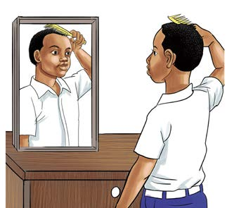

Kuakisiwa kwa miale ya mwanga
Kuakisiwa kwa mwanga ni kitendo cha kurudishwa kwa miale ya mwanga inapotua kwenye sura nyororo na inayong’aa. Mfano wa kifaa chenye sura nyororo na inayong’aa ni kioo bapa. Chunguza Kielelezo namba 11, kisha fanya kazi inayofuata.

Maelezo ya picha: Mvulana anachana nywele mbele ya kioo na anaona taswira yake ndani ya kioo.Miale ya mwanga inapotua katika uso nyororo unaong’aa huakisiwa. Kuakisiwa kwa miale ya mwanga husababisha kutengenezwa kwa taswira ya kitu au mtu kwenye kioo. Chukua mfano wa kujiona kwenye kioo. Unapojiangalia kwenye kioo, mwanga kutoka kwenye chanzo hugonga mwili wako na kurudi kwenye kioo, kioo huakisi mwanga huo na kurudi machoni mwako na kuwezesha kuona taswira yako.